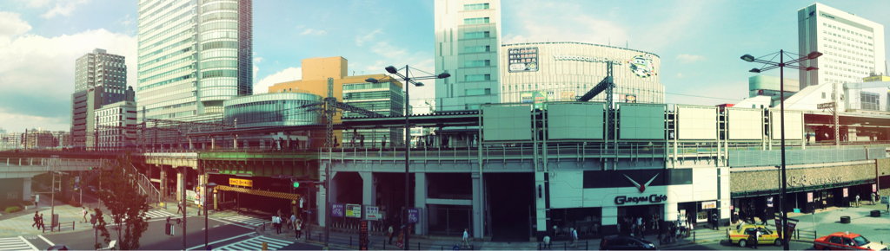

Fri, 25 May 2012 07:59:00 · japan · anime · tokyo · otaku · kawai
hello tokyo this busy intersection in

Hello Tokyo. This busy intersection in Akihabara, near the Denkigai Exit in Yamanote line, reminds me of a scene in Tekkonkinreet manga by Taiyō Matsumoto. Set in a fictional city (which look almost like post apocalyptic Tokyo), the manga was later made into an anime directed by Michael Arias. Tekkonkinreet is a dark and cynical portrayal of friendship, betrayal, redemption and survival in the underworld. It’s saga of ‘us’ against the world. – And for those who knows Tokyo, Akihabara is the ultimate Otaku (geek) heaven. My particular favourite is, of course, the Gundam cafe. 'Nuf said.